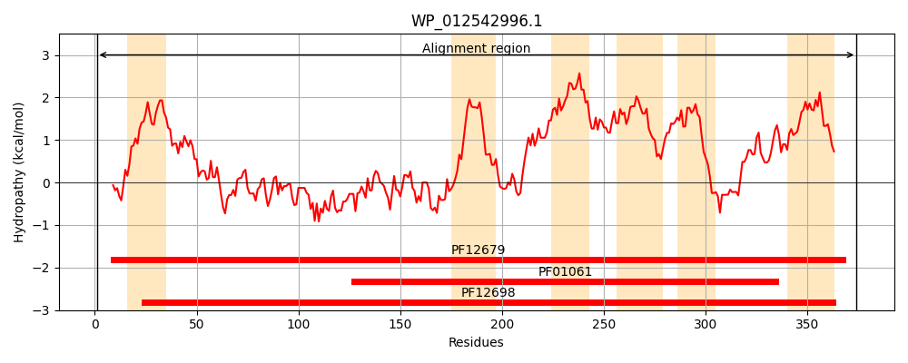
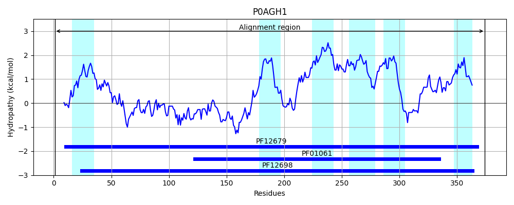
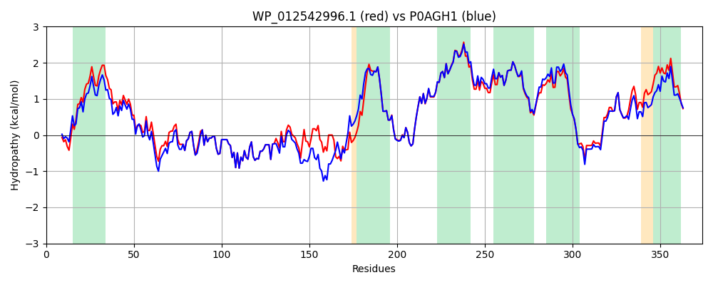

Hit Accession: P0AGH1
Hit TCID: 3.A.1.105.16
Hit Description: gnl|BL_ORD_ID|8861 gnl|TC-DB|P0AGH1|3.A.1.105.16 Inner membrane transport permease YhhJ OS=Escherichia coli (strain K12) GN=yhhJ PE=1 SV=3
Mach Len: 374
e:0.000000
Query TMS Count : 6
Hit TMS Count: 6
TMS-Overlap Score: 6.050000
Predicted Substrates:None
BLAST Alignment:
Score: 1686 , Bit scores: 654 bits, E-value: 0.0e+00, Alignment length: 374, Percentage identity: 89
Query: 1 MRGLRNIYNLGVKELRSLLGDKAMLALIVFAFTVSVYSSATVMPGSLHLAPIAVADMDKSQLSSRIINAFYRPWFLEPELITADEMDAGLDAGRYTFAINIPPNFQRDVLAGRQPEIQVNVDATRMSQAFTGNGYIQNIISGEVNSFVARYRDNSVLPVELAVRMRFNPNLEQERFGAVMAIINNITMLAIVLTGSALIREREHGTIEHLLVMPVTPFEIMMAKIWSMGLVVLVVSGLSLILMVQGILQVPIEGSIPLFMLGVALSLFATTSIGIFMGTLARSMPQLGLLMILVLLPLQMLSGGSTPRESMPQLVQDIMLTMPTTHFVSLAQAILYRGASFAIVWPQFLTLLAIGGVFFTIALLRFRKTIGEMA 374
MR LRNI+NLG+KELRSLLGDKAML LIVF+FTVSVYSSATV PGSL+LAPIA+ADMD+SQLS+RI+N+FYRPWFL PE+ITADEMDAGLDAGRYTFAINIPPNFQRDVLAGRQP+IQVNVDATRMSQAFTGNGYIQNII+GEVNSFVARYRDNS V L RMRFNPNL+ FG VMAIINNITMLAIVLTGSALIREREHGT+EHLLVMP+TPFEIMMAKIWSMGLVVLVVSGLSL+LMV+G+L VPIEGSIPLFMLGVALSLFATTSIGIFMGT+ARSMPQLGLL+ILVLLPLQMLSGGSTPRESMPQ+VQDIMLTMPTTHFVSLAQAILYRGA F IVWPQFLTL+AIGG FFTIALLRFRKTIG MA
Sbjct: 1 MRHLRNIFNLGIKELRSLLGDKAMLTLIVFSFTVSVYSSATVTPGSLNLAPIAIADMDQSQLSNRIVNSFYRPWFLPPEMITADEMDAGLDAGRYTFAINIPPNFQRDVLAGRQPDIQVNVDATRMSQAFTGNGYIQNIINGEVNSFVARYRDNSEPLVSLETRMRFNPNLDPAWFGGVMAIINNITMLAIVLTGSALIREREHGTVEHLLVMPITPFEIMMAKIWSMGLVVLVVSGLSLVLMVKGVLGVPIEGSIPLFMLGVALSLFATTSIGIFMGTIARSMPQLGLLVILVLLPLQMLSGGSTPRESMPQMVQDIMLTMPTTHFVSLAQAILYRGAGFEIVWPQFLTLMAIGGAFFTIALLRFRKTIGTMA 374 | Protein Hydropathy Plots: |
|---|
|  |  |
Pairwise Alignment-Hydropathy Plot:
|
|---|
|  |